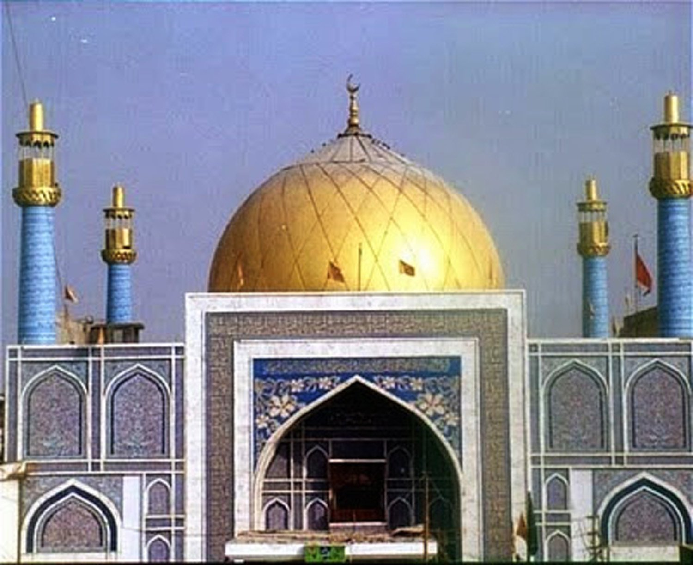

<div class="portfolio-single-load clearfix">
    <div class="custom-full-width-box">
        <div class="custom-container">
            <div class="custom-row align-items-center">
                <div class="custom-image-column">
                    
                </div>
                <div class="custom-text-column">
                    <h2 class="custom-heading">Sehwan Sharief
                    </h2>
                    <p class="custom-paragraph">
                        Sehwan Sharief is revered as the resting place of Lal Shahbaz Qalandar, a 13th-century Sufi saint. This town, steeped in mysticism, draws devotees from various faiths. Renowned for its folktales and Sufi music, it offers a spiritual retreat for seekers. Lal Shahbaz Qalandar's shrine stands as a testament to the region's rich Sufi heritage and cultural diversity.

                    </p>
                </div>
            </div>
        </div>
    </div><!-- .custom-full-width-box end -->

</div><!-- end single-project -->
